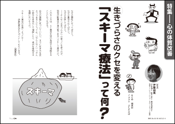
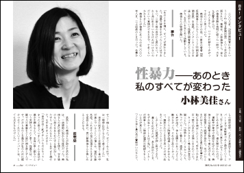
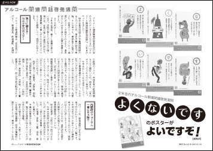
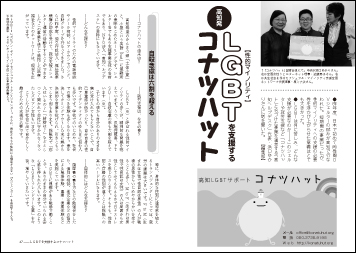
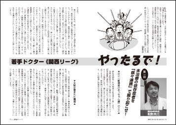
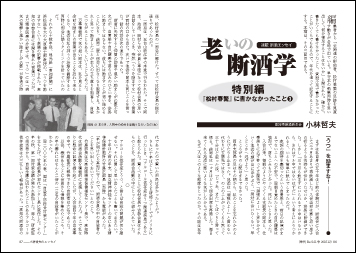

| 【目次】 | |
| 特 集 | |
| ◆心の体質改善 生きづらさのクセを変える 「スキーマ療法」って何？ なぜか犠牲になってばかり。 このやり方は、ＡＣ概念を別の角度から理解することにもつながる。 自分の課題に気づいていたり、 スキーマ療法の世界へようこそ！ |
 ◆ＰＡＲＴ１ 心のつぶやきの奥にあるもの ◆ＰＡＲＴ２ 安全なイメージ作り ◆ＰＡＲＴ３ スキーマはどうやってできる？ ◆ＰＡＲＴ４ 自分の中のスキーマ調べ ◆ＰＡＲＴ５ モードワーク |
| インタビュー | |
| 小林美佳さん 「性暴力—あのとき私のすべてが変わった」 「あのときを境に、すべてが変わりました。 性暴力被害をなかったことにはできない。 二度と前の自分にも戻れない。 それと共に生きていかなければいけないのだという 覚悟ができるまで、十年くらいかかりました」 そう語る小林美佳さんは、性犯罪被害をめぐる二冊の著書を出版、 インターネットなどを通し何千という性暴力被害者たちとつながり、 お互いを支えあう活動をしている。 ――美佳さんの物語を聞いた。 取材・文【近藤京子】 |
 |
| Topics | |
| ◆２年目のアルコール関連問題啓発週間 「よ」「く」「な」「い」「で」「す」 のポスターがよいですぞ！ ◆アルコール健康障害対策基本法 関係者会議 委員たちは、ここまでがんばっている！ ◆なんですと！ 飲酒・喫煙・公営ギャンブル「18歳解禁」がＮＧな理由 ◆高知発—— ＬＧＢＴ【性的マイノリティ】を支援するコナツハット ◆新しいTRUE COLORSサイトがこの秋、オープンしました！ |
  |
| 好評連載 | |
| ◆やったるで！若手ドクター《関西リーグ》 第一回 未治療の依存症者を 「病々連携」で掘り起こせ！ 【新生会病院 和気浩三】 《連載》ファシリテーションでグループが変わる！【今成知美】 第5回 どんな「場」を設定するか？ ◆Tokinの たぶん 連載マンガ(4) 当事者研究 ってほどじゃないけど！ ◆赤木かん子の 「児童文学は心の傷を読み解く宝庫だ！」 その29「リアル系」マンガの発展 ◆《依存症回復者に聞く》 再飲酒が教えてくれたこと ◆連載エッセイ「老いの断酒学」特別編 『松村春繁』に書かなかったこと（3）【小林哲夫】 ◆チャコとマチコの アサーティブに生きれば、なんとかなる!! ＜19＞非難・攻撃 いきなりですか！ 【今回の担当：木村久子】 |
  |
| ◆ASKの本／Be！バックナンバー／ＡＳＫの電子書籍／用語集 ◆読者のページ ◆ASK（アルコール薬物問題全国市民協会）のアクション／会員募集 ◆アスク・ヒューマン・ケア研修スケジュール ◆イベント・データ |
|
| ←前の号を見る 次号への投稿はこちら→ |